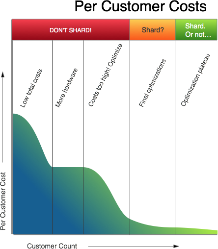

Changing the Growth Formula
There is a simple formula that many apply to their Software-as-a-Service business models – as customers increase, economies of scale should push the cost of servicing those customers down – all you have to do is build a system that scales. There’s only one problem with that formula. The world doesn’t work like that and growing a company in such a scenario can become a costly affair.
At the core of any SaaS business is the data and the databases that manage that data. When planning your use of any database technology the question of whether or not to shard your database comes up. Surely, the argument goes, as sharding is designed to increase the performance of large datasets with high throughput by spreading the data over multiple database instances, it is an optimization that should apply to any size of database installation so let’s use that as a first step to getting the scale part of economies of scale.
But sharding isn’t an optimization technique. It is as described, a method of horizontally scaling a database. Apply it to an inefficient database and you end up horizontally scaling the inefficiencies of your system, with each node carrying the same inefficient load.
With the shard-first plan, once you commit to sharding the cost of further optimization becomes massive as it tends to require datasets to be rebuilt to match emerging query patterns. Those inefficiencies in the unscaled system can end up pushing the need for more horizontal scaling, requiring more nodes to be thrown into the system, increasing costs.
If the formula doesn’t work, let’s look at changing it. Economies of scale only work if the core processes are efficient. But getting those processes in your business honed to be as sharp as can be is not something you can do on the first day of opening. Or on the second day. Or the third. So how do you get from opening your virtual SaaS doors to efficiently scaled for all?
Opening the doors
A new SaaS business should be concentrating on delivering to its customers and at this stage in the game the total cost of servicing those customers is going to be low. Per customer, they will not be low but you can roll out a fully-managed stack using Heroku and MongoHQ to provide a service to a customer for $50 a month. This should work until you have enough of a mix of customers to start seeing performance problems. And when those performance problems do turn up, you’ll probably not want to inhibit your initial growth spurt so the solution is…
More Hardware
More hardware can be assigned to customers who need it and this will address that next phase of early growth. This expansion phase should rely not on scaling but on creating independent deployments for each customer. This should be a “magical period” where growth is taking the lead and no one is going to flag up the growth in costs. That is until one day…
The high cost alert
When someone within your company points out how much you are spending on hosting costs, you will be at the ideal time to begin an optimization process. Start with those customers where the costs are too high as optimizing them will provide the biggest return on your investment; these customers are a slice of the real world and stop you from optimizing a straw man of a customer. Start by getting metrics on what your application stack is doing and using them to guide your hunt for the optimizable.
Look at your application architecture for the pain points and see if there are alternative databases or languages that may help. For example, here at MongoHQ, we’ve migrated some internal applications from Node to Go as part of our own optimization process. We help customers expand their options too: a recent example of architectural optimization we have discussed in the blog was one customer we switched away from a MongoDB-only solution to a mixed MongoDB/Redis. This pulled an expensive operation out of MongoDB and put it into a low-cost, high-efficiency store and enabled the customer to come up with new options as they scaled up.
Optimizations can come in many different forms. Look at your database usage to see if your access to it is as efficient as possible when handling a typical workload: if not, refactor that access code so that it reduces loads. Look at the algorithms you use and make sure they are actually optimal for your application’s use patterns: if not, look for new algorithms which fit better or refactor your current implementation so it’s closer to requirements. Look at your schemas, and look at any new information you are storing or have added and see if it’s being stored in the best way possible: if not, reform your schemas. And there’s always caching as a way of relieving load on regularly accessed datasets.
All through this process, the cost per customer should head downwards and customer growth will cease to map directly to linearly rising costs. The good news about this phase is that it’s fun and fast to start off with but then the law of diminishing returns will kick in and each optimization will deliver less value. This is the signal to move to the next phase…
Final Optimizations
You’ve now reached another “magical period”. Concerns about costs should be under control, or at least the person worried about hosting costs has stopped sitting in your office staring at you. This is the ideal time to consider your next move and how you make it scale. Your application should be optimized both economically and technically. When you scale out horizontally or vertically, you’ll be scaling with the efficiency you’ve already engineered into your solutions. Of course the scale out will still require engineering. If you set out to horizontally scale by sharding databases then you will need to carefully select sharding keys, but you will have lots of data to assist in that selection. If you are planning on vertically scaling, then you’ll be able to see where the extra resources can best be applied. There will be always be optimizations that you will want to do around those decisions. The process should drive down the cost per customer ready for the final phase…
The optimization plateau
With efficient applications, now built for scaling, the cost of expansion is under control and you have spread the load of your system across many hardware instances, tuned to the demands of your solution.
The changed formula has avoided the dangers of premature optimization and premature scaling. Rather than embarking on a course of action that will mis-shape future developments early in its journey, it allows a SaaS business to completely understand their lifecycle and requirements. This understanding doesn’t come off the shelf, no matter what price you pay.